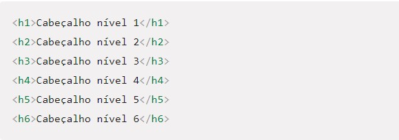
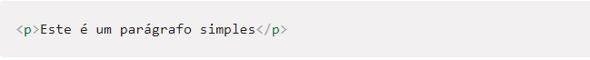
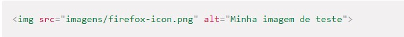
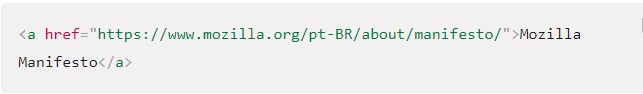

HTML não é uma linguagem de programação; é uma linguagem de marcação, usada para definir a estrutura do seu conteúdo. HTML consiste de uma série de elementos, que você usa para delimitar ou agrupar diferentes partes do conteúdo para que ele apareça ou atue de determinada maneira.
VoltarElementos de cabeçalho são implementados em seis níveis, h1 é o mais importante e h6 é o de menor importância. Um elemento de cabeçalho descreve brevemente o tópico da seção em que ele está.
Os parágrafos são representados no HTML pela tag "p", os elementos p são para conter parágrafos de texto; você os usará com frequência ao marcar um conteúdo de texto regular:

Para inserir-mos uma imagem em nossa página HTML, utilizamos a tag ,
isso incorpora uma imagem na nossa página na posição que aparece. Isso é feito pelo atributo src (source),
que contém o caminho para nosso arquivo de imagem.
Incluímos também um atributo alt (alternative). Neste atributo, você especifica um texto descritivo para usuários que não podem ver a imagem, sendo eles deficientes visuais, ou por algum problema com a imagem, fazendo com que a imagem não seja exibida.
Links são muito importantes — eles são o que faz da web ser de fato uma REDE! Para adicionar um link, precisamos usar um elemento simples — — "a" é a forma abreviada de "âncora".
Para saber: é muito utilizado o atributo target para definir se a página irá abrir na mesma aba com _self, ou irá abrir em uma nova aba do navegador com _blank.
Ambos os elementos ol e ul, representam uma lista de itens. Diferem porque, com o elemento ol, a ordem é significativa. Como regra de ouro para determinar qual deles usar, tente mudar a ordem dos itens da lista; se a significação for alterada, o elemento ol deve ser utilizado, senão o elemento ul é adequado.